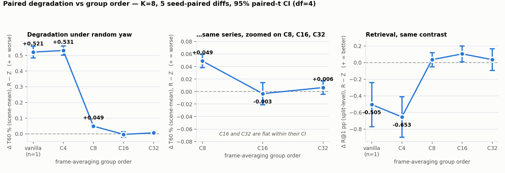
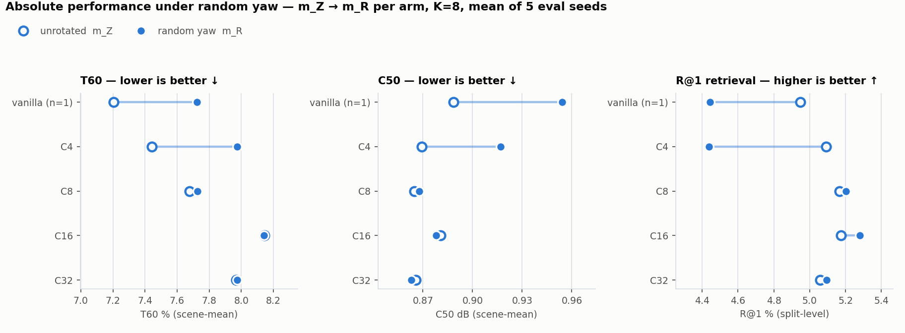

Campaign complete 2026-08-12 · 106/106 cells VALID at one pin
e8ca26e · gates G1–G4 all PASS · 5 arms × 2 K × 5 eval seeds, full unseen split
(6,337 items). This page is a presentation layer: every number below is read from
yaw_gen_results.md and the collector's yaw_gen_collect_full_report.md
(machine-readable source: yaw_gen_results_assets/results_bundle.json). No number
appears here first.
Higher group order is decisively flatter under random yaw: |Δ| C32 vs C4L, T60 −0.521 (Holm p=1.2e-6) and R@1 −0.574 (p=0.0024).
C32 vs vanilla on absolute m_R splits: C32 wins retrieval (+0.650, Holm p=0.0034) and loses T60 (+0.250 worse, p=9.2e-5).
Vanilla is not yaw-robust: ΔT60 +0.521 (Holm p=4.9e-6), ΔR@1 −0.505 (p=0.0061) — the positive control the whole design rests on.
SUPPORTED = both co-primaries favour the hypothesis after Holm; PARTIAL = exactly one; NEGATIVE = neither. Co-primaries are T60 % (scene-mean) and R@1 (split-level), per the pre-registered aggregation ruling.

| arm | ΔT60 % (scene-mean) | ΔR@1 (split) |
|---|---|---|
| VANL | +0.521 ± 0.037 | −0.505 |
| C4L | +0.531 ± 0.029 | −0.653 |
| C8 | +0.049 ± 0.011 | +0.035 |
| C16 | −0.003 ± 0.018 | +0.104 |
| C32 | +0.006 ± 0.011 | +0.035 |
Δ values are rendered at 3 dp throughout this page and its figures — the
collector's own precision (yaw_gen_collect_full_report.md). Note for the record:
yaw_gen_results.md §1 shows this column at 2 dp and gives VANL as −0.51, where the
canonical value is −0.50498 (→ −0.505, as that file's own §3 and the full report both render it);
this page follows the canonical figure. C4's orbit buys no protection against
uniform random yaw — its degradation is statistically indistinguishable from vanilla
(|Δ|(VANL) vs |Δ|(C4L): NEGATIVE, p≈0.5). C8 is ~10× flatter (C4L→C8 −0.482, p=4.3e-6);
C16 and C32 are flat within their CI. Uniform draws are almost never near C4's four angles;
the saturation point sits between C8 and C16.

| arm | T60 % (scene-mean) ↓ | C50 dB ↓ | EDT ms ↓ | R@1 (split) ↑ |
|---|---|---|---|---|
| VANL | 7.724 | 0.954 | 36.33 | 4.44 |
| C4L | 7.972 | 0.917 | 38.04 | 4.44 |
| C8 | 7.726 | 0.868 | 38.08 | 5.20 |
| C16 | 8.141 | 0.878 | 39.88 | 5.28 |
| C32 | 7.974 | 0.863 | 37.54 | 5.09 |
| hypothesis | metric | estimate | Holm p | verdict |
|---|---|---|---|---|
| H-P — m_R(C32) vs m_R(VANL) | T60 | +0.250 (worse) | 9.2e-5 | PARTIAL |
| H-P | R@1 | +0.650 (better) | 0.0034 | |
| H-M — |Δ|(C32) vs |Δ|(C4L) | T60 | −0.521 (flatter) | 1.2e-6 | SUPPORTED |
| H-M | R@1 | −0.574 (flatter) | 0.0024 | |
| H-S — Δ(VANL) ≠ 0 | T60 | +0.521 | 4.9e-6 | SUPPORTED |
| H-S | R@1 | −0.505 | 0.0061 |
Not pre-registered — an adjacent-contrast reading of the same data, reported as description, not as a tested claim.
| gate | what it proves | result |
|---|---|---|
| G1 · in-group floor | rotating a Cn arm by its own group angle moves neither co-primary beyond ½·σ̂ of that arm's five-seed spread | PASS |
| G2 · positive control | VANL@90° degrades ≥ 5·σ̂ — the harness can detect non-invariance at all | PASS |
| G3 · golden assignment | all 50 rotated cells' offsets recomputed from their
rotation seed via draw_yaw_offsets | PASS |
| G4 · assignment integrity | 135 hash equalities: cross-arm within (K, seed) and Z↔R within (arm, K, seed), 6,337 tuples per cell | PASS |
exp_14's θ=0 cells vs exp_11's committed conf rows, split-level on both sides (exp_11 never measured a scene-mean). Different campaign pins, different evaluator worktrees, same checkpoints and protocol.
| arm | exp_11 T60 | exp_14 Z T60 | Δ | 3σ bound | beyond? |
|---|---|---|---|---|---|
| C4L | 8.4144 | 8.4144 | 0.0000 | 0.0121 | no |
| C8 | 8.7136 | 8.7136 | 0.0000 | 0.0093 | no |
| C16 | 9.3435 | 9.3435 | 0.0000 | 0.0303 | no |
| C32 | 9.1468 | 9.1468 | 0.0000 | 0.0179 | no |
R@1 differences are likewise within bound (largest |Δ| 0.0284 against a 0.2461 bound). Exact T60 reproduction across pins is the strongest pipeline-reproducibility evidence in this program to date.
RIR_to_geom_R@k is confounded under rotation (its gallery embeds
the rotated point cloud) — quarantined to a descriptive block in the full report, never a
headline or a co-primary.